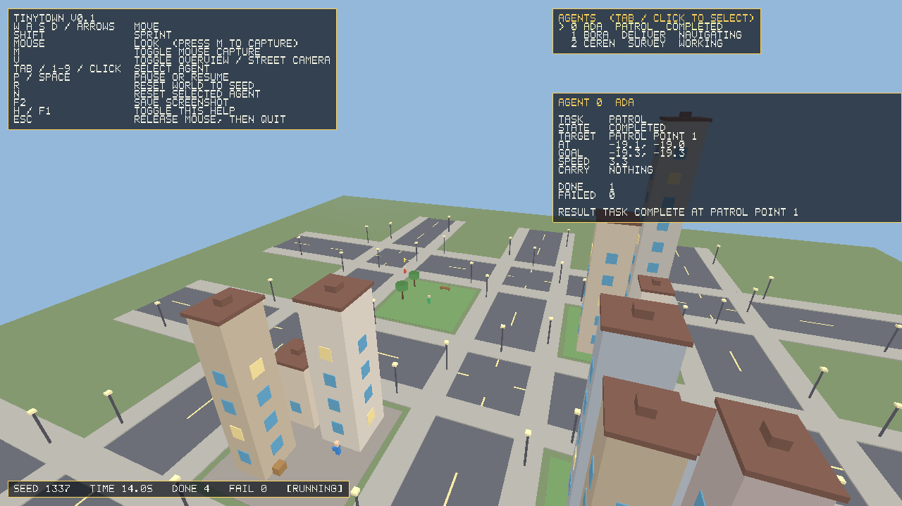

Devriye
Kaldırım köşelerinden oluşan bir döngüde yürür ve turu tekrarlar.
C++ · SDL2 · OpenGL · oyun motoru yok
TinyTown, prosedürel olarak üretilen küçük bir 3B şehir ve bu şehirde basit görevler yapan görünür ajanlardan oluşur. Harici görsel varlık, oyun motoru veya zorunlu yapay zekâ modeli kullanmaz.

TinyTown, küçük ama gerçek bir ürünün ne kadarını doğrudan kodla, az ve gerekçeli bağımlılıkla yapabileceğimizi gösteren küçük bir açık kaynak deneyidir. Şehirdeki her şekil, her renk ve yazı tipi kodla üretilir.
Proje tek bir Win32/OpenGL dosyası olarak başladı. O dosya
reference/win32-minicity/main.cpp yolunda tarih olarak
saklanır; Windows'a özel olduğu için Linux veya macOS'ta olduğu gibi
derlenemez. TinyTown onun amacını korur ve taşınabilir bir kabuk
üzerine yeniden kurar.
Uygulamayı açın, şehirde gezin, ajanları izleyin ve birini seçip ne yaptığını okuyun.
Fare ile bakış isteğe bağlıdır. İmleç kilitlenmez; M ile açılıp kapanır ve Esc her zaman serbest bırakır.
Ajanlar belirlenmiş kurallarla çalışan görev durum makineleridir. Karar vermek için bir dil modeli kullanmazlar. Durumlar: Bekliyor → Hedefe gidiyor → Görevde → Tamamlandı veya Başarısız.
Kaldırım köşelerinden oluşan bir döngüde yürür ve turu tekrarlar.
Depodan paket alır, bir dükkânın önüne götürür ve depoya döner. Taşınan paket ajanın üstünde çizilir.
Bir noktaya gider, orada kısa süre çalışır ve sonucu panele yazar.
Yol bulma, binaların içinden geçmez. Ulaşılamayan hedefte ajan uydurmak yerine "yol yok" diye açıkça başarısız olur ve yeni görev alır.
Kaynak kodu derlemeniz gerekmez. Paketler GitHub Release üzerinden yayımlanır.
TinyTown-v0.1.0-windows-x64.zip
ZIP'i çıkarın ve tinytown.exe dosyasına çift tıklayın.
SDL2 kütüphanesi paketin içindedir.
TinyTown-v0.1.0-linux-x64.tar.gz
Arşivi çıkarıp ./tinytown çalıştırın. SDL2 ve OpenGL
sistem bağımlılığıdır, pakette gelmez.
İndirme, bilgisayarınızdaki kurulu bir kopyayı otomatik güncellemez. Otomatik güncelleme bu sürümde yoktur.
Yanlış beklenti oluşturmamak için açıkça yazıyoruz. Aşağıdakiler v0.1.0 kapsamında yoktur:
Uygulama yerel bir SDL2 penceresi ve compatibility-profile immediate-mode OpenGL kullanır. Bu hâliyle tarayıcıda çalışmaz; tarayıcı hedefi ayrı bir kilometre taşıdır ve gerçek bir WebGL/GLES renderer ile Emscripten derlemesi gerektirir.
| Platform | Derleme | Testler | Arayüz açıldı |
|---|---|---|---|
| Linux (GCC) | Evet | 77 / 77 | Evet, Xvfb + Mesa ile |
| Windows (MSVC 2022) | Evet | 77 / 77 | Hayır, runner'da ekran yok |
| macOS | Hayır | Hayır | Hayır |
| Tarayıcı | Hayır | Hayır | Hayır |
Windows'ta uygulama derlenir ve testler geçer, ancak etkileşimli pencere ve OpenGL çizimi CI runner'ında denenmedi. Bu, gerçek masaüstü denemesinin yerini tutmaz.
Sonraki adımlar ayrı ve ölçülebilir görevlerdir. Hiçbiri v0.1.0'ın parçası değildir ve tamamlanmış gibi gösterilmez.
Tamamlandı: prosedürel şehir, gezilebilir kamera, üç deterministik ajan, Türkçe/İngilizce arayüz, testler, paketler, Release ve bu site.
Planlandı, henüz başlamadı: deterministik animasyon karesi dizisi, kodla sentezlenen ortam sesi ve ses düzeyi kontrolü, WAV dışa aktarımı, isteğe bağlı FFmpeg ile MP4.
Planlandı, henüz başlamadı: yerel Windows/Linux paketlerinin yeniden doğrulanması, WebGL/GLES uyumlu renderer fizibilitesi ve çalışan bir tarayıcı prototipi. Çalışan bir prototip yayımlanmadan "tarayıcı sürümü var" denmeyecek.